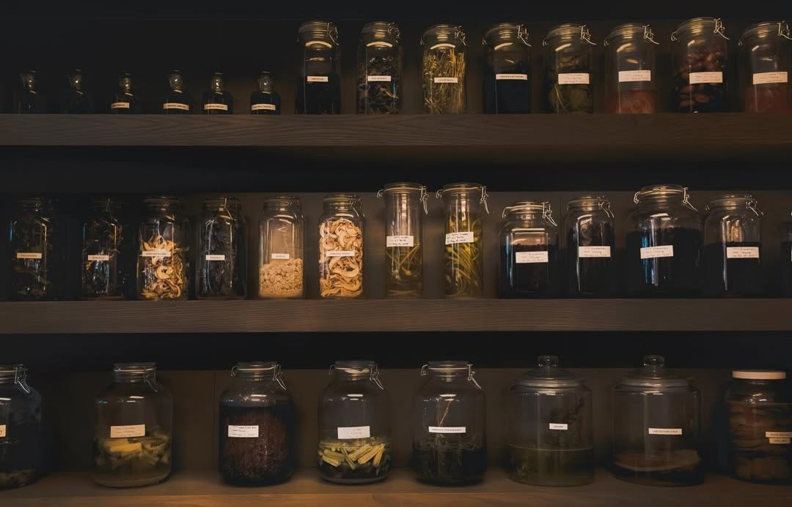
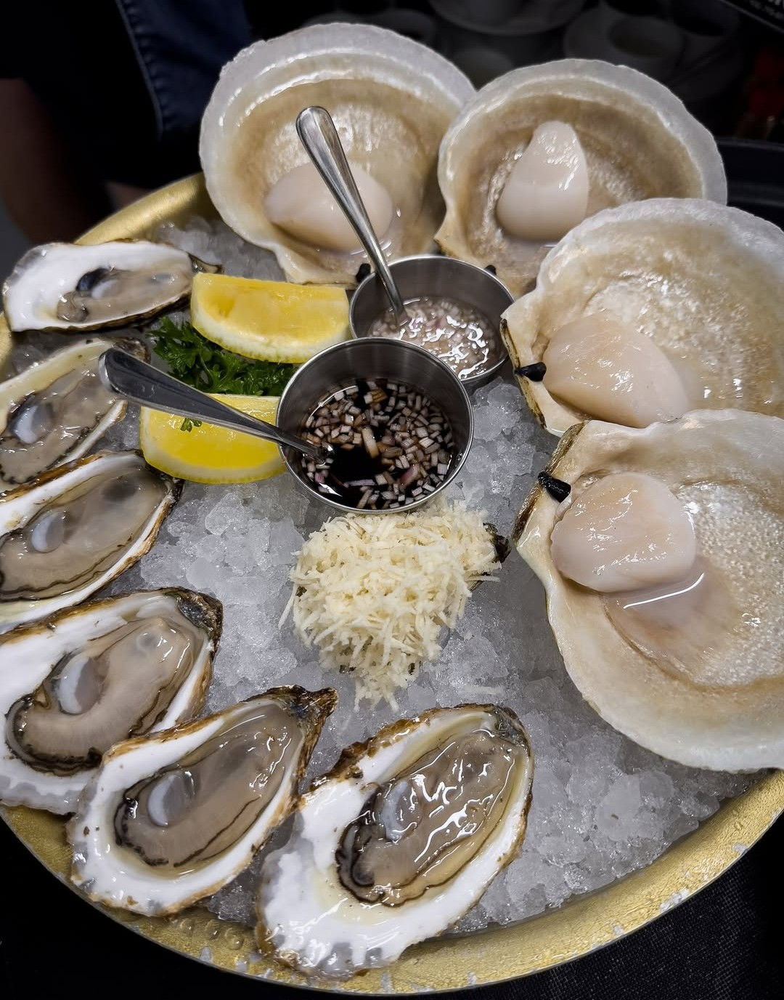
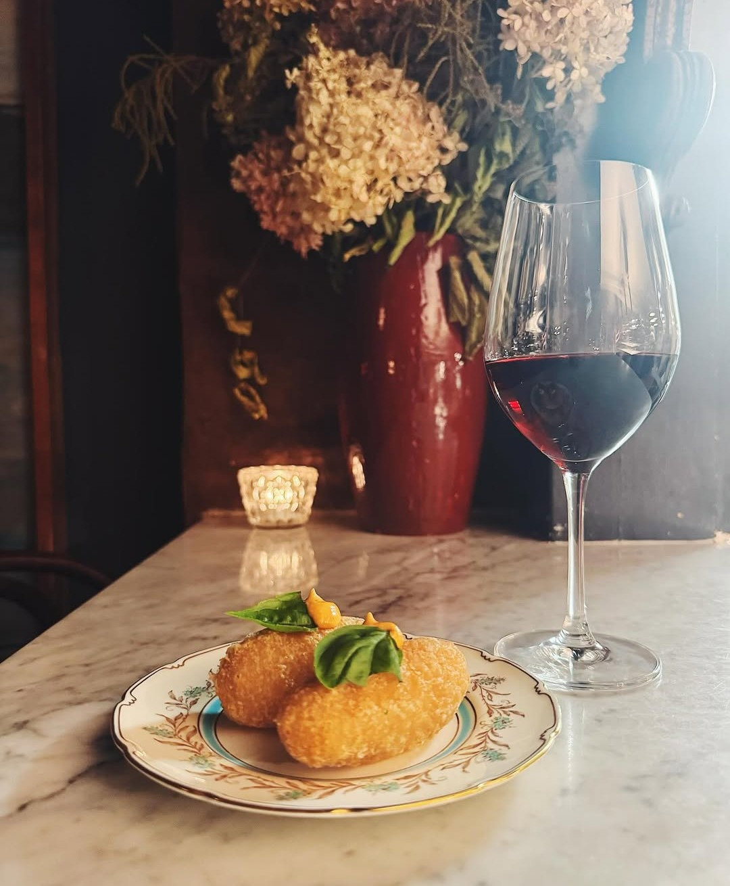
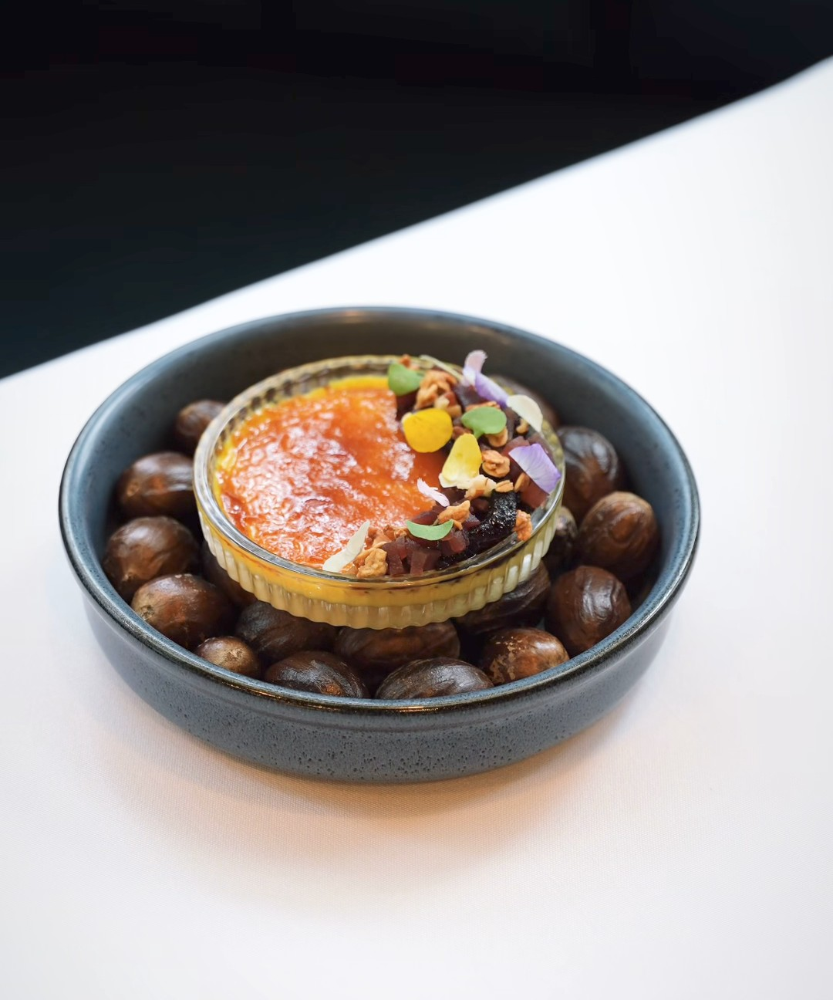

Every city has restaurants that cost more than the rest — the real question is whether the bill is actually justified. In Ottawa, the answer at these five is yes, though not always for the reason you'd expect.
A high price tag can mean a lot of different things: rare ingredients, an unusually labour-intensive process, a small dining room that can't spread its costs, or simply a level of ambition that doesn't come cheap to execute. The five restaurants below all charge near the top of what Ottawa's fine dining scene asks for — and each one has a genuinely different reason why that number is fair.
Antheia
A tasting menu priced like the months-long process behind it

Antheia's tasting menu sits at the top of what Ottawa charges for a meal, and the price reflects a process most restaurants never bother with — ingredients fermented, cured or preserved for months before they ever reach a plate. Every course represents time as much as technique, and that time is baked directly into the bill.
What justifies the cost isn't scarcity for its own sake — it's that nothing on the menu could be replicated quickly or cheaply elsewhere. Diners are paying for a genuinely singular process, not a marked-up version of something available down the street.
Atelier
No menu, no shortcuts, and a price that reflects both

Atelier's tasting menu carries one of the higher price tags in the city, and the reasoning is straightforward: guests aren't paying for a set list of dishes, they're paying for a kitchen's undivided creative attention for an entire evening. The format leaves no room for the cost-cutting shortcuts a fixed menu allows.
Two Canadian Culinary Championship titles don't lower overhead, and neither does a menu that changes constantly enough to prevent bulk purchasing or repeat prep. The price reflects a restaurant that has chosen ambition over efficiency at every turn — and diners are, in effect, paying for that choice.
Harmons Steakhouse
Wagyu, raw bar towers, and a butchery program priced accordingly

Harmons doesn't hide what drives its price point — a USA Wagyu Gold Grade programme and an in-house butchery operation are expensive to run, and that cost shows up directly on the bill. A seafood tower alone can rival the price of a full meal elsewhere in the city.
What makes it worth the number on the check is control: nothing here is outsourced, from the aging process to the fabrication of each cut. Diners are paying for a level of quality assurance most steakhouses simply can't offer, because most steakhouses aren't doing the work in-house.
North & Navy
A small room where every seat comes at a premium

North & Navy's prices read high for a restaurant this size, but the intimacy is the point — a small, tightly run Centretown room with limited seating simply can't spread its costs the way a larger dining room can. Every seat carries more weight on the bottom line, and the pricing reflects that reality.
The upside for diners is a kitchen that isn't trying to serve a hundred covers a night. The attention that comes with a smaller operation — a menu edited down to what the kitchen can execute perfectly — is exactly what the higher price is buying.
Aiana
A nine-course experience with the room and the service to match

Aiana's tasting menu sits near the top of Ottawa's price range, and the dramatic room is part of what's being paid for as much as the food — a space built with the same ambition as the nine-course menu it serves. Design, service and food are priced as a single, unified experience here.
For guests who want fine dining that fully commits to the occasion — from the lighting to the pacing of each course explained tableside — Aiana's price tag buys a genuinely complete evening, not just a meal.
Five very different reasons to spend more on dinner — and five kitchens that, by any honest measure, earn it.